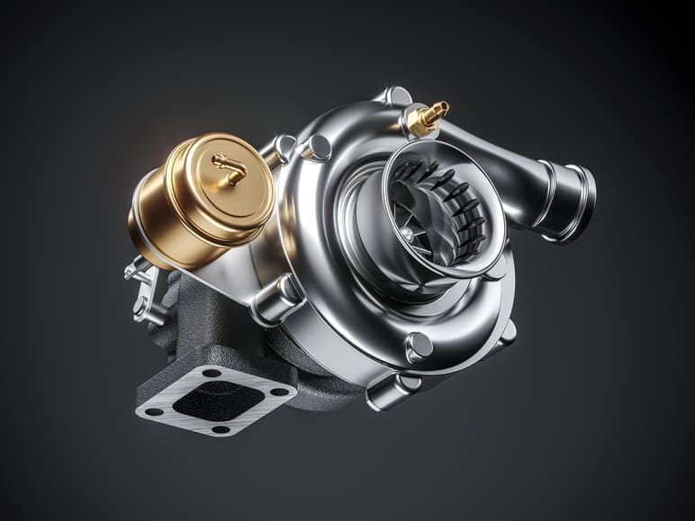

Motor
Quantum X500

Un motor revolucionario diseñado para ofrecer un rendimiento excepcional en una amplia
variedad de aplicaciones industriales y comerciales. Desde su potencia impresionante hasta
su eficiencia incomparable, el Quantum X500 es la elección perfecta para aquellos que buscan
un motor de alto rendimiento y confiable.
Caja de cambios
TurboShift 9000

La solución definitiva para optimizar el rendimiento de su vehículo. Diseñada con tecnología
de vanguardia y un enfoque en la eficiencia y la versatilidad, la TurboShift 9000 lleva la
experiencia de conducción a un nivel completamente nuevo.
Turbocompresor
PowerBoost 5000

Con el Turbocompresor PowerBoost 5000, estamos redefiniendo las expectativas de rendimiento
de tu vehículo. Con tecnología de vanguardia y un diseño innovador, el PowerBoost 5000 no
solo aumenta la potencia de tu motor, sino que también lleva tu experiencia de conducción a
nuevas alturas.